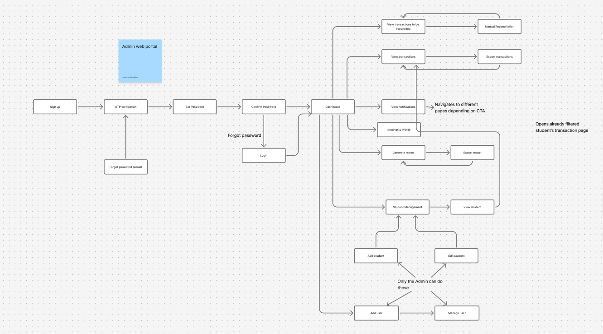

EduPay
Designing the admin dashboard to help schools manage payments, track transactions, and communicate with parents efficiently

Designing the admin dashboard to help schools manage payments, track transactions, and communicate with parents efficiently
EduPay is a comprehensive payment platform designed to streamline school-related transactions for Kenyan parents. The project involved creating three interconnected experiences: a parent mobile app, parent web portal, and admin dashboard.
I was responsible for designing the Admin Web Dashboard, which enables school administrators to manage student accounts, track payments, generate reports, and communicate with parents. I collaborated with two other designers who handled the parent-facing mobile and web experiences, ensuring design consistency across the entire ecosystem.
Product Designer
(Admin Dashboard)
3 Product Designers
1 Product Manager
August – Present
Figma, FigJam
Pen & Paper
EduPay consists of three interconnected platforms working together to create a seamless payment experience for both parents and school administrators:
Allows parents to make payments, view transaction history, and receive notifications on-the-go.
Designed by Tabitha Margaret
Provides a desktop experience for detailed payment management and report downloads.
Designed by Faith Jeroben
Empowers school staff to manage all student accounts, track payments, and generate reports.
My Focus Area
The following sections dive deep into my work on the Admin Dashboard.
While parents struggled with fragmented payment channels, school administrators faced an equally challenging problem: managing hundreds of transactions across multiple payment types, reconciling accounts, generating reports for accountability, and keeping parents informed about payment statuses - all while using disconnected spreadsheets and manual processes.
Admin Dashboard Goal: Create a centralized system for school administrators to efficiently manage student accounts, track all payment activities in real-time, generate financial reports, and communicate payment statuses to parents - eliminating manual processes and reducing administrative burden.
Our Product Manager conducted in-depth user research with Kenyan schools and administrators to understand their pain points and needs. Here are the key insights that informed our design decisions:
Administrators spent 10+ hours weekly manually reconciling payments from different channels (M-Pesa, bank transfers, cash).
Generating financial reports for the board required days of manual Excel work, causing delays in decision-making.
No easy way to track which students had outstanding balances or send payment reminders to parents at scale.
Admins needed different permission levels for bursar, accountant, and principal roles - but most systems were all-or-nothing.
Based on research findings, we identified the key administrator roles who would use the dashboard:
Primary Admin User
Age: 45 | Role: School Bursar | Location: Nairobi
Manages daily financial operations for a school of 800 students. Responsible for recording payments, and reconciling accounts.
Secondary Admin User
Age: 52 | Role: School Principal | Location: Kisumu
Oversees overall school operations and financial health. Needs high-level visibility into revenue, outstanding balances, and payment trends without getting into daily transaction details.
I mapped out the key administrator journeys in FigJam, focusing on the most frequent tasks: processing payments, managing student accounts, and generating reports. The goal was to minimize clicks while maintaining data accuracy.

The low-fidelity explorations helped us validate the core flow with stakeholders before investing time in visual design.
We developed a brand system that conveys trust, simplicity, and accessibility - crucial for a financial application targeting Kenyan parents.

The high-fidelity designs focused on clarity, ease of use, and building trust through transparent information architecture. Every screen was designed to reduce cognitive load while providing all necessary information at a glance.
Note: Full project files available upon request due to confidentiality agreements.
Designed a data-rich dashboard that immediately shows key metrics: total revenue, pending payments, overdue accounts, and recent transactions. Each metric is clickable, allowing admins to dive deeper into specific areas that need attention.
Created a powerful search interface that lets admins quickly find students by name, ID, class, or payment status. Added bulk actions for common tasks like sending payment reminders or generating receipts for multiple students.
Implemented a flexible permission system where different admin roles (Bursar, Accountant, Principal) see different views and have different action capabilities. This addresses the security concerns raised in research while maintaining workflow efficiency.
Designed a report builder that generates common financial reports (monthly revenue, outstanding balances, payment trends) with a single click. Admins can customize date ranges and export in multiple formats (PDF, Excel, CSV).
Added a live transaction feed showing payments as they come in from M-Pesa, bank transfers, or the parent app. Automatic reconciliation reduces manual data entry by 85%.
The EduPay platform is currently in development, with designs being implemented by the engineering team. Early stakeholder feedback has been overwhelmingly positive, particularly regarding:
This project taught me the importance of designing for trust in financial applications. Every micro-interaction, every confirmation message, and every piece of visual feedback contributes to the user's confidence in the system.
Working in a collaborative design team also reinforced the value of maintaining a unified design language while allowing individual designers autonomy over their respective platforms.